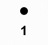
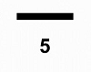
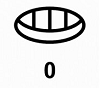
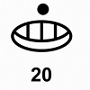
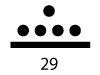

Одним из самых важных наследий племени является система счисления Майя. Известно, что при разработке данной системы, Майя опирались на явления природы, жизненные циклы звезд, планет и человека. Совсем недавно выяснилось, что «космически» направленная система счисления племени Майя соответствует привычной нам двоичной системе счисления.
Подробно о системе счисления
Система счисления Майя представляет собой некую последовательность, основанную на законе с основанием степени 20. Ряд чисел системы счисления Майя имеет примерно такой вид: 20 400 8000 160000 3200000 и так далее
Империя Майя
Технологии Майя
Система счисления
Это очень древняя цифилизация
Она имеет очень богатую историю
Так же "предсказала" конец света в 2012 году
Она изобрела календарь Майя, которым пользовались другие цивилизации
Могли создавать глиняную посуду без гончарного круга
Изображали людей настолько реалистично, что было сложно понять ложь или реальность
Так же как и египтяне, имели свои пирамиды в которых хранились технологии
20 - не рандомное число, оно означает все 20 пальцев на руках человека
В их системе наиболее часто используются точки, палочки и раковины
Точки означали единицу(1)
Черты же, обозначали пять(5) единиц
Раковины обозначали ноль(0), завершеность
Для того, чтоб вычислять основные циклы времени, Майа адаптировали свою систему исчисления к земным условиям. Они модифицировали ее так, что она наиболее точно соответствовала земному году и периоду обращения нашей планеты вокруг Солнца. В результате, последовательность чисел приняла следующий вид: 20 360 7200 144000 2880000 и так далее, где основной единицей стал один день кин.

1
Так Майя пишет число 1

5
Вот так Майя пишет цифру 5

0
Так Майя пишет 0 и обозначает завершеность

20
А так Майя пишет число 20

29
Случайное число.
Наша команда
Эти люди работали несколько дней и ночей без перерывов.
Так же, без них этот проект был бы совершенно другим.
Диего Ворде
Руководитель всего проекта.
Какой-то сайт в интернете
Оказал невероятно огромную помощь, предоставив нам бесплатный нам макет для сайта.
Евгений Второй
Сделал огромный вклад в всю работу, помогал всем, чем только мог помочь.